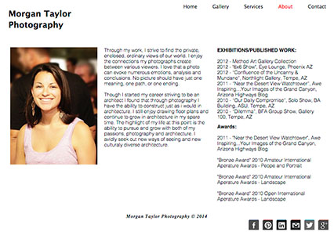

Study 3 - Artist Photo Portfolio
Objective:
Create an artist portfolio website that highlights my photography. The design needs to be simple to ensure nothing detracts from them or distracts a user.
Version 1
Challenge:
There are millions of photography websites. No clutter, just photographs. That's what will make this gallery stand out.
Version 2
Solution:
I constantly research the designs of other photographers and new trends in portfolio website designs and update the design of this website.
The website has changed several times over the past few years always staying up to date with best practices. Besides serving its purpose of being my photography portfolio, this website is also where I challenge myself to learn and implement new code.

Learned:
I've learned and will continue to learn from this endlessly changing project. This website served as many firsts for me. To name a couple, using JavaScript and jQuery to make light boxes in the photo galleries, and creating image sprites for the social media icons.